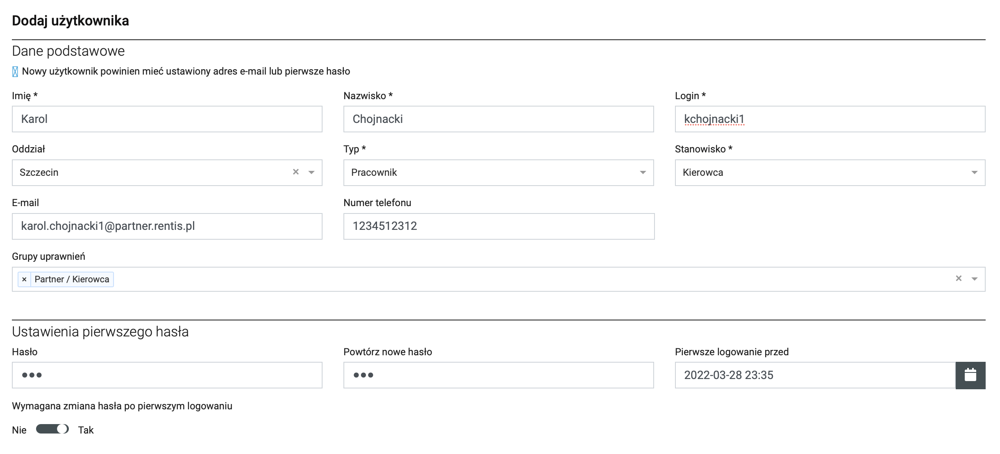
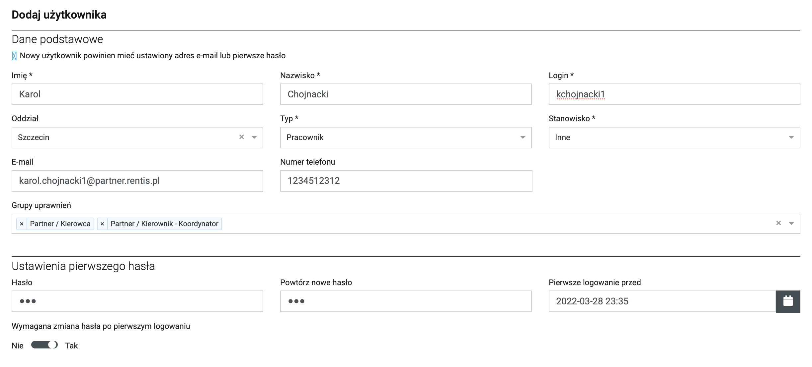
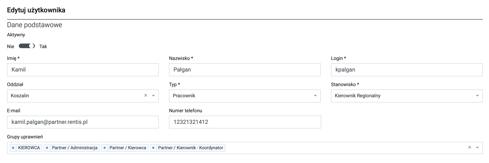
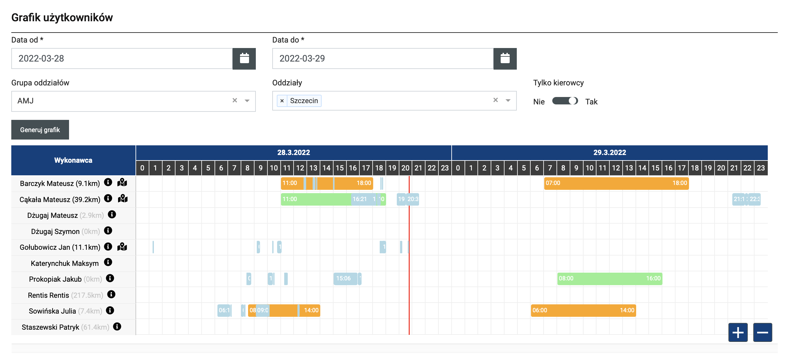
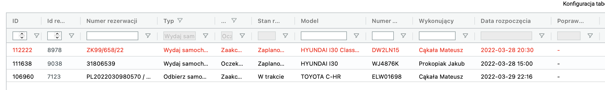
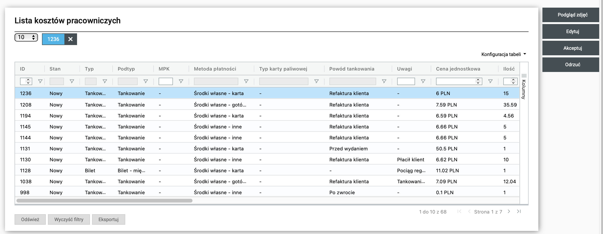
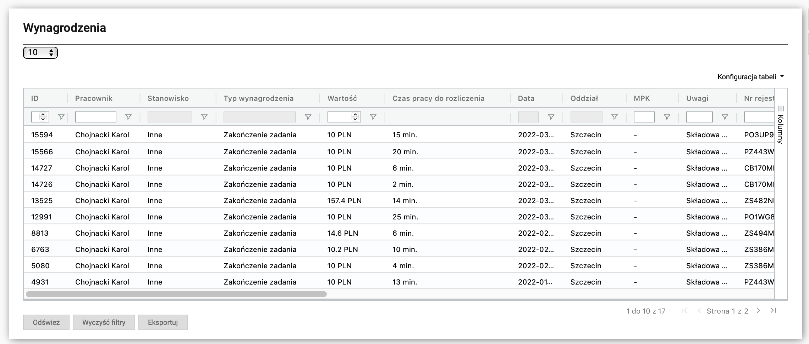
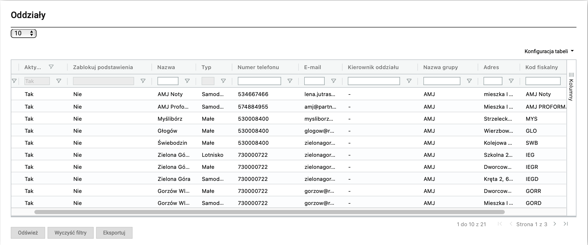

Finanse
X
Użytkownicy
Pierwszą funkcją modułu organizacja jest opcja użytkownicy. W tym miejscu dodajemy nowe konta pracownikow.
Poniżej przykładowe ustawienia kont dla roznych stanowisk.
Agent:
{kind=link}
Konto koordynatora:
{kind=link}
Konto KZR:
{kind=link}
Monitoring kierowcow
Dobrze zapowiadający się moduł, ale na tę chwilę bezużyteczny. Śledzenie pracownikow jest niemożliwe, ponieważ SoRent odświeża pozycję co kilka minut i to dopiero wtedy, gdy pracownik korzysta z aplikacji. W związku z tym nie zweryfikujemy, gdzie dokładnie jest agent na trasie.
Grafik zadań
W grafiku zadań możemy wygenerować grafik na każdy dzień. Przydatna opcja, gdy zapomnimy komu przydzieliliśmy jakie zadanie.
{kind=link}
Zadania
Funkcja podobna do grafiku zadań, ale w formie tabeli i zawierająca więcej informacji. Można ją skonfigurować wedle uznania, a wtedy daje dużą wiedzę na temat postępu pracownikow.
Poniżej przykładowo ułożona tabela, ktora śledzi zadania, ktore są zaplanowane i jeszcze nieukończone.
{kind=link}
Koszty pracownicze
Zbior kosztow pracowniczych, dodawanych w tablecie. Pozycje można weryfikować i zaakceptować lub jeśli nie są zasadne odrzucić.
{kind=link}
Wynagrodzenie
W tym miejscu możemy wyliczć wynagrodzenie kierowcow na podstawie czasu wyliczonego przez zadania wykonywane w SoRent.
{kind=link}
Oddziały - Jednostki
Tutaj określamy wszystkie oddziały, ktore znajdują się u partnera. Oddziały używane są do obliczania odległości podstawienia i zwrotu.
{kind=link}